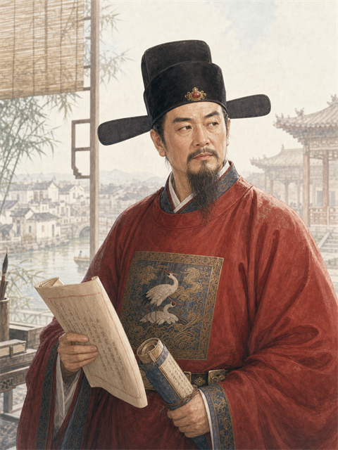
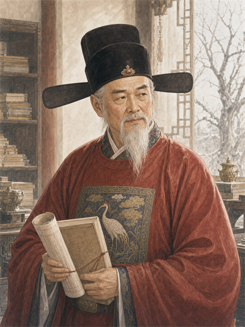
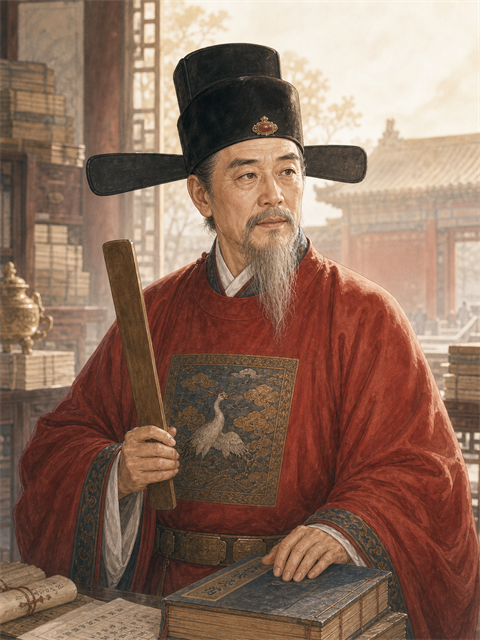

密
御前会议
机密 · 诛魏忠贤
🗡️ 诛戮
🤐 密议不录

深言 · 钱龙锡钱龙锡推心置腹
礼部尚书 · 东林 · 忠 92 · 野 28
坦白度 92 · 推心置腹
召入心腹5 员 · 忠诚+品级择 · 至多 8
（陛下入御书房。内侍、宫娥尽皆屏退。）
朕
今上
魏阉势倾中外，党羽遍布六部台省。朕欲除之，又恐其狗急反噬、激成大变。卿等以为——可乎？当如何措置？
钱龙锡 推心置腹
陛下既屏退左右，臣便剖肝沥胆——魏阉之横，根在司礼监批红之权。今陛下已收其柄，彼已成强弩之末。当先散其党、孤其势，徐徐图之，一击可缚。臣愿以死任之！

成基命 推心置腹
钱公所言极是。然崔呈秀握兵部、田尔耕掌锦衣卫，此二爪牙不去，恐生肘腋之变。宜先以恩调其要害，夺其兵权，而后动魏。

李标 大致坦言
臣附二公之议。惟事关重大，乞陛下密之又密——今日御书房之言，断不可泄于外廷。一字漏出，则前功尽弃，反受其噬。

王在晋 揣摩圣意
（似有顾虑，言辞含糊）此……全凭陛下圣裁。臣愚钝，不敢妄议中官之事……
（可单独深言以探其真章 · 待陛下决断）
起居注
📜 记起居注
🤐 不录（密议）
泄密风险 低 · 王在晋存疑